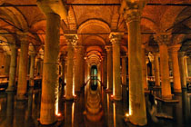

| Tarihî Yarımada'nın ortasında bulunan Yerebatan Sarnıcı, M.S 542 yılında Bizans İmparatoru I. Justinianus (527-565) tarafından Büyük Saray'ın su ihtiyacını karşılamak üzere yaptırılmıştır. Suyun içinden yükselen mermer sütunların arasındaki ihtişamından dolayı halk tarafından Yerebatan Sarayı olarak da anılmaktadır. Yabancı kaynaklarda geçen Basilika (Basilica) isminin ise sarnıcın yakınında bulunan Ilius Basilikası'ndan geldiği rivayet edilir. Yerebatan Sarnıcı 9.800 m2'lik bir alanı kapsayan dev bir yapıdır. Burada her biri 9 metre yüksekliğinde 336 sütun bulunmaktadır. Belirli aralıklarla dikilen bu sütunlar, her sırada 28 tane olmak üzere 12 sıra meydana getirirler. Suyun içerisinde yükselen bu sütunlar uçsuz bucaksız bir ormanı hatırlamakta ve ziyaretçiyi sarnıca girer girmez etkilemektedir. Sarnıcın kuzeybatı köşesindeki iki sütunun altında kaide olarak kullanılan iki Medusa başı Roma Çağı heykeltraşlık sanatının şaheser örneklerinden biridir. Medusa'yla ilgili mitolojiye dayandırılan birçok efsane bu sarnıcı daha da gizemli kılar. Bir söylenceye göre Medusa yeraltı dünyasının dişi canavarı olan üç Gorgonadan biridir. Bu üç kız kardeşten yalnızca yılanbaşlı Medusa olumludur ve kendisine bakanları taşa çevirme gücüne sahiptir. O dönemde büyük yapıları ve özel yerleri kötülüklerden korumak amacıyla Gorgona kafalarının resim ve heykellerinin konulduğu, Medusa'nın da bu düşünceyle buraya yerleştirildiği zannedilmektedir. Bir başka rivayete göre Medusa siyah gözleri, uzun saçları ve güzel vücudu ile övünen bir kızdı. Uzun zamandan beri Zeus'un oğlu Perseus'u sevmektedir. Bu arada Athene de Perseus'u sevmekte ve Medusa'yı kıskanmaktadır. Bunun için Athene, Medusa'nın saçlarını korkunç yılanlar biçimine sokar. Artık Medusa kime baksa, baktığı kimse taş kesilir. Daha sonra onu bu biçimde gören Perseus heyecanla Medusa'nın büyülendiğini düşünerek başını keser, başını eline alıp düşmanlarını taşa çevirerek birçok savaşlar kazanır. Bu vakıadan sonra Medusa'nın eski Bizans'ta kılıç kabzalarına ve sütun kaidelerine ters ve yan olarak işlendiği söylenmektedir |